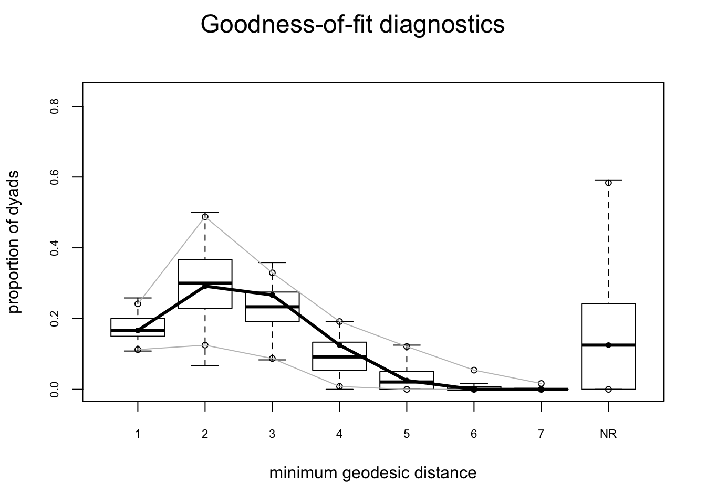
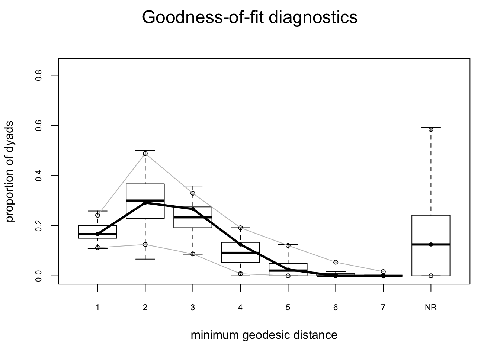
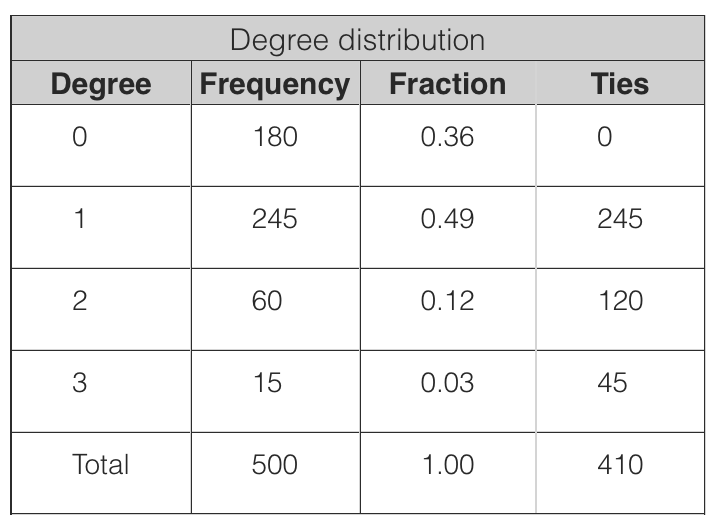

Tutorial 1: Exponential Random Graph Models (ERGMs) using statnet
Day 1 | Network Models and HIV/STI with EpiModel | Harvard 2017
This tutorial is a joint product of the Statnet Development Team:
Martina Morris (University of Washington)
Mark S. Handcock (University of California, Los Angeles)
Carter T. Butts (University of California, Irvine)
David R. Hunter (Penn State University)
Steven M. Goodreau (University of Washington)
Samuel M. Jenness (Emory University)
Skye Bender de-Moll (Oakland)
Pavel N. Krivitsky (University of Wollongong)
For general questions and comments, please refer to statnet users group and mailing list
http://statnet.csde.washington.edu/statnet_users_group.shtml
1. Getting Started
Open an R session, and set your working directory to the location where you would like to save this work.
To install all of the packages in the statnet suite:
install.packages("statnet")
library(statnet)Or, to only install the specific statnet packages needed for this tutorial:
install.packages("ergm") # will install the network package
install.packages("sna")After the first time, to update the packages one can either repeat the commands above, or use:
update.packages("name.of.package")For this tutorial, we will need one additional package (coda), which is recommended (but not required) by ergm:
install.packages("coda")Make sure the packages are attached:
library(statnet)or
library(ergm)
library(sna)
library(coda)Check package version
# latest versions: ergm 3.7.1 and network 1.13.0 (as of 6/1/2017)
sessionInfo()Set seed for simulations – this is not necessary, but it ensures that we all get the same results (if we execute the same commands in the same order).
set.seed(0)2. Statistical network modeling
Exponential-family random graph models (ERGMs) represent a general class of models based in exponential-family theory for specifying the probability distribution for a set of random graphs or networks. Within this framework, one can—among other tasks—obtain maximum-likehood estimates for the parameters of a specified model for a given data set; test individual models for goodness-of-fit, perform various types of model comparison; and simulate additional networks with the underlying probability distribution implied by that model.
The general form for an ERGM can be written as:
\[ P(Y=y)=\frac{\exp(\theta'g(y))}{k(\theta)} \]
where Y is the random variable for the state of the network (with realization y), \(g(y)\) is a vector of model statistics for network y, \(\theta\) is the vector of coefficients for those statistics, and \(k(\theta)\) represents the quantity in the numerator summed over all possible networks (typically constrained to be all networks with the same node set as y).
This can be re-expressed in terms of the conditional log-odds of a single tie between two actors:
\[ \operatorname{logit}{(Y_{ij}=1|y^{c}_{ij})=\theta'\delta(y_{ij})} \]
where \(Y_{ij}\) is the random variable for the state of the actor pair \(i,j\) (with realization \(y_{ij}\)), and \(y^{c}_{ij}\) signifies the complement of \(y_{ij}\), i.e. all dyads in the network other than \(y_{ij}\). The vector \(\delta(y_{ij})\) contains the “change statistic” for each model term. The change statistic records how \(g(y)\) term changes if the \(y_{ij}\) tie is toggled on or off. So:
\[ \delta(y_{ij}) = g(y^{+}_{ij})-g(y^{-}_{ij}) \] where \(y^{+}_{ij}\) is defined as \(y^{c}_{ij}\) along with \(y_{ij}\) set to 1, and \(y^{-}_{ij}\) is defined as \(y^{c}_{ij}\) along with \(y_{ij}\) set to 0. That is, \(\delta(y_{ij})\) equals the value of \(g(y)\) when \(y_{ij}=1\) minus the value of \(g(y)\) when \(y_{ij}=0\), but all other dyads are as in \(g(y)\).
This emphasizes that the coefficient \(\theta\) can be interpreted as the log-odds of an individual tie conditional on all others.
The model terms \(g(y)\) are functions of network statistics that we hypothesize may be more or less common than what would be expected in a simple random graph (where all ties have the same probability). For example, specific degree distributions, or triad configurations, or homophily on nodal attributes. We will explore some of these terms in this tutorial, and links to more information are provided in section 3.
One key distinction in model terms is worth keeping in mind: terms are either dyad independent or dyad dependent. Dyad independent terms (like nodal homophily terms) imply no dependence between dyads—the presence or absence of a tie may depend on nodal attributes, but not on the state of other ties. Dyad dependent terms (like degree terms, or triad terms), by contrast, imply dependence between dyads. Such terms have very different effects, and much of what is different about network models comes from the complex cascading effects that these terms introduce. A model with dyad dependent terms also requires a different estimation algorithm, and you will see some different components in the output.
We’ll start by running some simple models to demonstrate the use of the “summary” and “ergm” commands. The ergm package contains several network data sets that we will use for demonstration purposes here.
data(package = "ergm") # tells us the datasets in our packagesBernoulli model
We begin with the simplest possible model, the Bernoulli or Erdos-Renyi model, which contains only one term to capture the density of the network as a function of a homogenous edge probability. The ergm term for this is edges. We’ll fit this simple model to Padgett’s Florentine marriage network. As with all data analysis, we start by looking at our data: using graphical and numerical descriptives.
# loads flomarriage and flobusiness data
data(florentine)
# Let's look at the flomarriage network properties
flomarriage Network attributes:
vertices = 16
directed = FALSE
hyper = FALSE
loops = FALSE
multiple = FALSE
bipartite = FALSE
total edges= 20
missing edges= 0
non-missing edges= 20
Vertex attribute names:
priorates totalties vertex.names wealth
No edge attributes# Setup a 2 panel plot (for later)
par(mfrow = c(1, 2))
# Plot the flomarriage network
plot(flomarriage, main = "Florentine Marriage", cex.main = 0.8)
# Look at the $g(y)$ statistic for this model
summary(flomarriage~edges) edges
20 # Estimate the model
flomodel.01 <- ergm(flomarriage~edges) Evaluating log-likelihood at the estimate. # The fitted model object
summary(flomodel.01)
==========================
Summary of model fit
==========================
Formula: flomarriage ~ edges
Iterations: 5 out of 20
Monte Carlo MLE Results:
Estimate Std. Error MCMC % p-value
edges -1.6094 0.2449 0 <1e-04 ***
---
Signif. codes: 0 '***' 0.001 '**' 0.01 '*' 0.05 '.' 0.1 ' ' 1
Null Deviance: 166.4 on 120 degrees of freedom
Residual Deviance: 108.1 on 119 degrees of freedom
AIC: 110.1 BIC: 112.9 (Smaller is better.) 
How should we interpret the coefficient from this model? The log-odds of any tie existing is:
\[ \small{ \begin{eqnarray*} & = & -1.609\times\mbox{change in the number of ties}\\ & = & -1.609\times1 \end{eqnarray*} } \]
for all ties, since the addition of any tie to the network always changes the number of ties by 1 for a tie toggled from 0 to 1.
The corresponding probability is:
\[ \small{ \begin{eqnarray*} & = & \exp(-1.609)/(1+\exp(-1.609))\\ & = & 0.1667 \end{eqnarray*} } \]
which corresponds to the density we observe in the flomarriage network: there are 20 ties and (16 choose 2 = 16*15/2 =) 120 dyads.
Triad formation
Let’s add a term often thought to be a measure of “clustering”: the number of completed triangles. The ergm-term for this is triangle. This is a dyad dependent term. As a result, the estimation algorithm automatically changes to MCMC, and because this is a form of stochastic estimation your results may differ slightly.
# Look at the g(y) stats for this model
summary(flomarriage ~ edges + triangle) edges triangle
20 3 flomodel.02 <- ergm(flomarriage ~ edges + triangle) Starting maximum likelihood estimation via MCMLE:
Iteration 1 of at most 20:
The log-likelihood improved by 0.005728
Step length converged once. Increasing MCMC sample size.
Iteration 2 of at most 20:
The log-likelihood improved by < 0.0001
Step length converged twice. Stopping.
Evaluating log-likelihood at the estimate. Using 20 bridges: 1 2 3 4 5 6 7 8 9 10 11 12 13 14 15 16 17 18 19 20 .
This model was fit using MCMC. To examine model diagnostics and check for degeneracy, use the mcmc.diagnostics() function.summary(flomodel.02)
==========================
Summary of model fit
==========================
Formula: flomarriage ~ edges + triangle
Iterations: 2 out of 20
Monte Carlo MLE Results:
Estimate Std. Error MCMC % p-value
edges -1.6694 0.3521 0 <1e-04 ***
triangle 0.1532 0.5771 0 0.791
---
Signif. codes: 0 '***' 0.001 '**' 0.01 '*' 0.05 '.' 0.1 ' ' 1
Null Deviance: 166.4 on 120 degrees of freedom
Residual Deviance: 108.1 on 118 degrees of freedom
AIC: 112.1 BIC: 117.7 (Smaller is better.) Now, how should we interpret coefficients?
The conditional log-odds of two actors having a tie is:
\[ \small{ -1.68\times\mbox{change in the number of ties}+0.15\times\mbox{change in number of triangles} } \]
- For a tie that will create no triangles, the conditional log-odds is: \(-1.68\).
- if one triangle: \(-1.68 + 0.15 = -1.53\)
- if two triangles: \(-1.68 +0.15\times2=-1.38\)
- the corresponding probabilities are 0.16, 0.18, and 0.20.
Let’s take a closer look at the ergm object itself:
# this has the class ergm
class(flomodel.02) [1] "ergm"# the ERGM object contains lots of components.
names(flomodel.02) [1] "coef" "sample" "sample.obs" "iterations"
[5] "MCMCtheta" "loglikelihood" "gradient" "hessian"
[9] "covar" "failure" "network" "newnetworks"
[13] "newnetwork" "coef.init" "est.cov" "coef.hist"
[17] "stats.hist" "steplen.hist" "control" "etamap"
[21] "formula" "target.stats" "target.esteq" "constrained"
[25] "constraints" "reference" "estimate" "offset"
[29] "drop" "estimable" "null.lik" "mle.lik" # you can extract/inspect individual components
flomodel.02$coef edges triangle
-1.669395 0.153229 Nodal covariates: effects on mean degree
We can test whether edge probabilities are a function of wealth. This is a nodal covariate, so we use the ergm-term nodecov.
# %v% references vertex attributes
wealth <- flomarriage %v% "wealth"
wealth [1] 10 36 55 44 20 32 8 42 103 48 49 3 27 10 146 48# summarize the distribution of wealth
summary(wealth) Min. 1st Qu. Median Mean 3rd Qu. Max.
3.00 17.50 39.00 42.56 48.25 146.00 # network plot with vertex size proportional to wealth
plot(flomarriage, vertex.cex = wealth/25,
main = "Florentine marriage by wealth", cex.main = 0.8) 
# observed statistics for the model
summary(flomarriage ~ edges + nodecov("wealth")) edges nodecov.wealth
20 2168 flomodel.03 <- ergm(flomarriage ~ edges + nodecov("wealth"))Evaluating log-likelihood at the estimate. summary(flomodel.03)
==========================
Summary of model fit
==========================
Formula: flomarriage ~ edges + nodecov("wealth")
Iterations: 4 out of 20
Monte Carlo MLE Results:
Estimate Std. Error MCMC % p-value
edges -2.594929 0.536056 0 <1e-04 ***
nodecov.wealth 0.010546 0.004674 0 0.0259 *
---
Signif. codes: 0 '***' 0.001 '**' 0.01 '*' 0.05 '.' 0.1 ' ' 1
Null Deviance: 166.4 on 120 degrees of freedom
Residual Deviance: 103.1 on 118 degrees of freedom
AIC: 107.1 BIC: 112.7 (Smaller is better.) Yes, there is a significant positive wealth effect on the probability of a tie.
How do we interpret the coefficients here? Note that the wealth effect operates on both nodes in a dyad. The conditional log-odds of a tie between two actors is:
\[ \small{ -2.59\times\mbox{change in the number of ties} + 0.01\times\mbox{the wealth of node 1} + 0.01\times\mbox{the wealth of node 2} } \]
\[ \small{ -2.59\times\mbox{change in the number of ties} + 0.01\times\mbox{the sum of the wealth of the two nodes} } \]
- for a tie between the two nodes with the least wealth, the conditional log-odds is: \(-2.59 + 0.01*(3+8) = -2.48\)
- for a tie between the two nodes with the most wealth: \(-2.59 + 0.01*(103+146) = -0.10\)
- for a tie between the nodes with the maximum wealth and the minimum wealth: \(-2.59 + 0.01*(146+3) = -1.10\)
- The corresponding probabilities are 0.08, 0.48, and 0.25.
Note: This model specification does not include a term for homophily by wealth. It just specifies a relation between wealth and mean degree. To specify homophily on wealth, you would use the ergm-term absdiff.
Nodal covariates: Homophily
Let’s try a larger network, a simulated mutual friendship network based on one of the schools from the Add Health study. Here, we’ll examine the homophily in friendships by grade and race. Both are discrete attributes so we use the ergm-term nodematch.
data(faux.mesa.high)
mesa <- faux.mesa.highmesa Network attributes:
vertices = 205
directed = FALSE
hyper = FALSE
loops = FALSE
multiple = FALSE
bipartite = FALSE
total edges= 203
missing edges= 0
non-missing edges= 203
Vertex attribute names:
Grade Race Sex
No edge attributespar(mfrow = c(1, 1)) # Back to 1-panel plots
plot(mesa, vertex.col = "Grade")
legend("bottomleft", fill = 7:12,
legend = paste("Grade", 7:12), cex = 0.75)
fauxmodel.01 <- ergm(mesa ~ edges + nodematch("Grade", diff = TRUE) +
nodematch("Race", diff = TRUE))Observed statistic(s) nodematch.Race.Black and nodematch.Race.Other are at their smallest attainable values. Their coefficients will be fixed at -Inf.
Evaluating log-likelihood at the estimate. summary(fauxmodel.01)
==========================
Summary of model fit
==========================
Formula: mesa ~ edges + nodematch("Grade", diff = TRUE) + nodematch("Race",
diff = TRUE)
Iterations: 8 out of 20
Monte Carlo MLE Results:
Estimate Std. Error MCMC % p-value
edges -6.2328 0.1742 0 <1e-04 ***
nodematch.Grade.7 2.8740 0.1981 0 <1e-04 ***
nodematch.Grade.8 2.8788 0.2391 0 <1e-04 ***
nodematch.Grade.9 2.4642 0.2647 0 <1e-04 ***
nodematch.Grade.10 2.5692 0.3770 0 <1e-04 ***
nodematch.Grade.11 3.2921 0.2978 0 <1e-04 ***
nodematch.Grade.12 3.8376 0.4592 0 <1e-04 ***
nodematch.Race.Black -Inf 0.0000 0 <1e-04 ***
nodematch.Race.Hisp 0.0679 0.1737 0 0.6959
nodematch.Race.NatAm 0.9817 0.1842 0 <1e-04 ***
nodematch.Race.Other -Inf 0.0000 0 <1e-04 ***
nodematch.Race.White 1.2685 0.5371 0 0.0182 *
---
Signif. codes: 0 '***' 0.001 '**' 0.01 '*' 0.05 '.' 0.1 ' ' 1
Null Deviance: 28987 on 20910 degrees of freedom
Residual Deviance: 1928 on 20898 degrees of freedom
AIC: 1952 BIC: 2047 (Smaller is better.)
Warning: The following terms have infinite coefficient estimates:
nodematch.Race.Black nodematch.Race.Other Note that two of the coefficients are estimated as -Inf (the nodematch coefficients for race Black and Other). Why is this?
# Frequencies of race
table(mesa %v% "Race")
Black Hisp NatAm Other White
6 109 68 4 18 mixingmatrix(mesa, "Race")Note: Marginal totals can be misleading
for undirected mixing matrices.
Black Hisp NatAm Other White
Black 0 8 13 0 5
Hisp 8 53 41 1 22
NatAm 13 41 46 0 10
Other 0 1 0 0 0
White 5 22 10 0 4The problem is that there are very few students in the Black and Other race categories, and these few students form no within-group ties. The empty cells are what produce the -Inf estimates.
Note that we would have caught this earlier if we had looked at the \(g(y)\) stats at the beginning:
summary(mesa ~edges + nodematch("Grade", diff = TRUE) +
nodematch("Race", diff = TRUE)) edges nodematch.Grade.7 nodematch.Grade.8
203 75 33
nodematch.Grade.9 nodematch.Grade.10 nodematch.Grade.11
23 9 17
nodematch.Grade.12 nodematch.Race.Black nodematch.Race.Hisp
6 0 53
nodematch.Race.NatAm nodematch.Race.Other nodematch.Race.White
46 0 4 Moral: It’s a good idea to check the descriptive statistics of a model in the observed network before fitting the model.
See also the ergm-term nodemix for fitting mixing patterns other than homophily on discrete nodal attributes.
3. Model terms available for ergm estimation and simulation
Model terms are the expressions (e.g. “triangle”) used to represent predictors on the right-hand size of equations used in:
- calls to
summary(to obtain measurements of network statistics on a dataset) - calls to
ergm(to estimate an ergm model) - calls to
simulate(to simulate networks from an ergm model fit)
Many ERGM terms are simple counts of configurations (e.g., edges, nodal degrees, stars, triangles), but others are more complex functions of these configurations (e.g., geometrically weighted degrees and shared partners). In theory, any configuration (or function of configurations) can be a term in an ERGM. In practice, however, these terms have to be constructed before they can be used—that is, one has to explicitly write an algorithm that defines and calculates the network statistic of interest. This is another key way that ERGMs differ from traditional linear and general linear models.
The terms that can be used in a model also depend on the type of network being analyzed: directed or undirected, one-mode or two-mode (“bipartite”), binary or valued edges.
Terms provided with ergm
For a list of available terms that can be used to specify an ERGM, type:
help("ergm-terms")A table of commonly used terms can be found here.
A more complete discussion of many of these terms can be found in the ‘Specifications’ paper in the Journal of Statistical Software v24(4)
Finally, note that models with only dyad independent terms are estimated in statnet using a logistic regression algorithm to maximize the likelihood. Dyad dependent terms require a different approach to estimation, which, in statnet, is based on a Monte Carlo Markov Chain (MCMC) algorithm that stochastically approximates the Likelihood function and its maximum.
4. Diagnostics: troubleshooting and checking for model degeneracy
The computational algorithms in ergm use MCMC to estimate the likelihood function when dyad dependent terms are in the model. Part of this process involves simulating a set of networks to use as a sample for approximating the unknown component of the likelihood: the \(k(\theta)\) term in the denominator.
When a model is not a good representation of the observed network, these simulated networks may be far enough away from the observed network that the estimation process is affected. In the worst case scenario, the simulated networks will be so different that the algorithm fails altogether.
For more detailed discussion of model degeneracy in the ERGM context, see the papers by Mark Handcock referenced below.
In the worst case scenario, we end up not being able to obtain coefficent estimates, so we can’t use the GOF function to identify how the model simulations deviate from the observed data. In this case, however, we can use the MCMC diagnostics to observe what is happening with the simulation algorithm, and this (plus some experience and intuition about the behavior of ergm-terms) can help us improve the model specification.
Below we show a simple example of a model that converges, and one that doesn’t, and how to use the MCMC diagnostics to improve a model that isn’t converging.
What it looks like when a model converges properly
We will first consider a simulation where the algorithm works using the program defaults, and observe the behavior of the MCMC estimation algorithm using the mcmc.diagnostics function.
summary(flobusiness ~ edges + degree(1)) edges degree1
15 3 fit <- ergm(flobusiness ~ edges + degree(1))Starting maximum likelihood estimation via MCMLE:
Iteration 1 of at most 20:
The log-likelihood improved by 0.233
Step length converged once. Increasing MCMC sample size.
Iteration 2 of at most 20:
The log-likelihood improved by 0.0005074
Step length converged twice. Stopping.
Evaluating log-likelihood at the estimate. Using 20 bridges: 1 2 3 4 5 6 7 8 9 10 11 12 13 14 15 16 17 18 19 20 .
This model was fit using MCMC. To examine model diagnostics and check for degeneracy, use the mcmc.diagnostics() function.mcmc.diagnostics(fit)Sample statistics summary:
Iterations = 16384:4209664
Thinning interval = 1024
Number of chains = 1
Sample size per chain = 4096
1. Empirical mean and standard deviation for each variable,
plus standard error of the mean:
Mean SD Naive SE Time-series SE
edges 0.11938 3.749 0.05857 0.05857
degree1 -0.02344 1.621 0.02533 0.02533
2. Quantiles for each variable:
2.5% 25% 50% 75% 97.5%
edges -7 -2 0 3 7
degree1 -3 -1 0 1 3
Sample statistics cross-correlations:
edges degree1
edges 1.0000000 -0.4323643
degree1 -0.4323643 1.0000000
Sample statistics auto-correlation:
Chain 1
edges degree1
Lag 0 1.000000000 1.0000000000
Lag 1024 -0.001796752 0.0002510346
Lag 2048 0.003986959 0.0211571269
Lag 3072 0.004679749 -0.0026133303
Lag 4096 -0.011707782 -0.0021489455
Lag 5120 0.025167702 0.0091854147
Sample statistics burn-in diagnostic (Geweke):
Chain 1
Fraction in 1st window = 0.1
Fraction in 2nd window = 0.5
edges degree1
-1.8666 -0.5676
Individual P-values (lower = worse):
edges degree1
0.06195209 0.57032991
Joint P-value (lower = worse): 0.04968252 .Loading required namespace: latticeExtraWarning in formals(fun): argument is not a function
MCMC diagnostics shown here are from the last round of simulation, prior to computation of final parameter estimates. Because the final estimates are refinements of those used for this simulation run, these diagnostics may understate model performance. To directly assess the performance of the final model on in-model statistics, please use the GOF command: gof(ergmFitObject, GOF=~model).This is what you want to see in the MCMC diagnostics: the MCMC sample statistics are varying randomly around the observed values at each step (so the chain is “mixing” well) and the difference between the observed and simulated values of the sample statistics have a roughly bell-shaped distribution, centered at 0. The sawtooth pattern visible on the degree term deviation plot is due to the combination of discrete values and small range in the statistics: the observed number of degree 1 nodes is 3, and only a few discrete values are produced by the simulations. So the sawtooth pattern is is an inherent property of the statistic, not a problem with the fit.
There are many control parameters for the MCMC algorithm (help(control.ergm)), and we’ll play with some of these below. To see what the algorithm is doing at each step, you can drop the sampling interval down to 1:
fit <- ergm(flobusiness ~ edges + degree(1),
control = control.ergm(MCMC.interval = 1))This runs a version with every network returned, and might be useful if you are trying to debug a bad model fit.
What it looks like when a model fails
Now let us look at a more problematic case, using a larger network:
data("faux.magnolia.high")
magnolia <- faux.magnolia.high
plot(magnolia, vertex.cex = 0.5)
summary(magnolia~edges+triangle) edges triangle
974 169 fit <- ergm(magnolia ~ edges + triangle)Iteration 1 of at most 20:
Convergence test P-value: 1.4e-87
The log-likelihood improved by 1.183
Iteration 2 of at most 20:
Convergence test P-value: 3.8e-04
The log-likelihood improved by 0.1518
Iteration 3 of at most 20: Error: Number of edges in a simulated network exceeds that in the observed by a factor of more than 20. This is a strong indicator of model degeneracy. If you are reasonably certain that this is not the case, increase the MCMLE.density.guard control.ergm() parameter.Very interesting. In the process of trying to fit this model, the algorithm heads off into networks that are much much more dense than the observed network. This is such a clear indicator of a degenerate model specification that the algorithm stops after 4 iterations, to avoid heading off into areas that would cause memory issues. If you’d like to peek a bit more under the hood, you can stop the algorithm earlier to catch where it’s heading:
fit <- ergm(magnolia ~ edges + triangle,
control = control.ergm(MCMLE.maxit = 2))Starting maximum likelihood estimation via MCMLE:
Iteration 1 of at most 2:
The log-likelihood improved by 7.828
Iteration 2 of at most 2:
The log-likelihood improved by 4.138 MCMLE estimation did not converge after 2 iterations. The estimated coefficients may not be accurate. Estimation may be resumed by passing the coefficients as initial values; see 'init' under ?control.ergm for details.Evaluating log-likelihood at the estimate. Using 20 bridges: 1 2 3 4 5 6 7 8 9 10 11 12 13 14 15 16 17 18 19 20 .
This model was fit using MCMC. To examine model diagnostics and check for degeneracy, use the mcmc.diagnostics() function.mcmc.diagnostics(fit)Sample statistics summary:
Iterations = 16384:1063936
Thinning interval = 1024
Number of chains = 1
Sample size per chain = 1024
1. Empirical mean and standard deviation for each variable,
plus standard error of the mean:
Mean SD Naive SE Time-series SE
edges -60.87 68.95 2.155 47.13
triangle 26.77 67.74 2.117 53.96
2. Quantiles for each variable:
2.5% 25% 50% 75% 97.5%
edges -177.00 -117 -61.5 -8 67
triangle -52.42 -41 20.5 76 169
Sample statistics cross-correlations:
edges triangle
edges 1.0000000 0.9037164
triangle 0.9037164 1.0000000
Sample statistics auto-correlation:
Chain 1
edges triangle
Lag 0 1.0000000 1.0000000
Lag 1024 0.9382960 0.9969231
Lag 2048 0.8957464 0.9937794
Lag 3072 0.8670811 0.9906363
Lag 4096 0.8463600 0.9874856
Lag 5120 0.8389785 0.9843734
Sample statistics burn-in diagnostic (Geweke):
Chain 1
Fraction in 1st window = 0.1
Fraction in 2nd window = 0.5
edges triangle
-7.529 -3.372
Individual P-values (lower = worse):
edges triangle
5.114835e-14 7.464036e-04
Joint P-value (lower = worse): 0.0006001785 .Warning in formals(fun): argument is not a function
MCMC diagnostics shown here are from the last round of simulation, prior to computation of final parameter estimates. Because the final estimates are refinements of those used for this simulation run, these diagnostics may understate model performance. To directly assess the performance of the final model on in-model statistics, please use the GOF command: gof(ergmFitObject, GOF=~model).Iteration 1 of at most 20:
Convergence test P-value: 1.4e-87
The log-likelihood improved by 1.183
Iteration 2 of at most 20:
Convergence test P-value: 3.8e-04
The log-likelihood improved by 0.1518
Iteration 3 of at most 20: Error: Number of edges in a simulated network exceeds that in the observed by a factor of more than 20. This is a strong indicator of model degeneracy. If you are reasonably certain that this is not the case, increase the MCMLE.density.guard control.ergm() parameter.Clearly, somewhere very bad.
In the full NME workshop, we explore a vareity of options in mearning to understand and deal with degeneracy. Here we will just cut to the chase and show an alternative model that works and which captures triadic closure using the gwesp term instead of triangles:
fit <- ergm(magnolia ~ edges + gwesp(0.25, fixed = TRUE) +
nodematch("Grade") + nodematch("Race") + nodematch("Sex"),
control = control.ergm(MCMC.samplesize = 50000, MCMC.interval = 1000),
verbose = TRUE)Evaluating network in model
Initializing Metropolis-Hastings proposal(s): ergm:MH_TNT
Initializing model.
Using initial method 'MPLE'.
Fitting initial model.
MPLE covariate matrix has 211 rows.
Fitting ERGM.
Starting maximum likelihood estimation via MCMLE:
Density guard set to 19563 from an initial count of 974 edges.
Iteration 1 of at most 20 with parameter:
edges gwesp.fixed.0.25 nodematch.Grade nodematch.Race
-9.8619687 1.6946112 2.8534613 0.9886313
nodematch.Sex
0.8245285
Sampler accepted 30.325% of 50000000 proposed steps.
Sample size = 50000 by 50000
Back from unconstrained MCMC. Average statistics:
edges gwesp.fixed.0.25 nodematch.Grade nodematch.Race
113.70552 51.63637 111.84232 108.28536
nodematch.Sex
97.15828
Average estimating equation values:
edges gwesp.fixed.0.25 nodematch.Grade nodematch.Race
113.70552 51.63637 111.84232 108.28536
nodematch.Sex
97.15828
is.inCH: iter= 1, inside hull.
iter= 1, est=1.000000, low=1.000000, high=1.000000, test=1.
Calling MCMLE Optimization...
Using Newton-Raphson Step with step length 1 ...
Using lognormal metric (see control.ergm function).
Using log-normal approx (no optim)
The log-likelihood improved by 5.214
Step length converged once. Increasing MCMC sample size.
Iteration 2 of at most 20 with parameter:
edges gwesp.fixed.0.25 nodematch.Grade nodematch.Race
-9.7983804 1.8004067 2.7583057 0.9172631
nodematch.Sex
0.7756419
Sampler accepted 31.344% of 200000000 proposed steps.
Sample size = 200000 by 2e+05
Back from unconstrained MCMC. Average statistics:
edges gwesp.fixed.0.25 nodematch.Grade nodematch.Race
24.05366 23.21286 24.76840 22.92339
nodematch.Sex
21.11829
Average estimating equation values:
edges gwesp.fixed.0.25 nodematch.Grade nodematch.Race
24.05366 23.21286 24.76840 22.92339
nodematch.Sex
21.11829
is.inCH: iter= 1, inside hull.
iter= 1, est=1.000000, low=1.000000, high=1.000000, test=1.
Calling MCMLE Optimization...
Using Newton-Raphson Step with step length 1 ...
Using lognormal metric (see control.ergm function).
Using log-normal approx (no optim)
Starting MCMC s.e. computation.
The log-likelihood improved by 0.1784
Step length converged twice. Stopping.
Evaluating log-likelihood at the estimate. Using 20 bridges: 1 2 3 4 5 6 7 8 9 10 11 12 13 14 15 16 17 18 19 20 .
This model was fit using MCMC. To examine model diagnostics and check for degeneracy, use the mcmc.diagnostics() function.mcmc.diagnostics(fit)Sample statistics summary:
Iterations = 16000:200015000
Thinning interval = 1000
Number of chains = 1
Sample size per chain = 2e+05
1. Empirical mean and standard deviation for each variable,
plus standard error of the mean:
Mean SD Naive SE Time-series SE
edges 24.05 47.64 0.10652 2.380
gwesp.fixed.0.25 23.21 43.54 0.09736 3.331
nodematch.Grade 24.77 45.62 0.10201 2.493
nodematch.Race 22.92 43.42 0.09709 2.309
nodematch.Sex 21.12 39.05 0.08731 1.937
2. Quantiles for each variable:
2.5% 25% 50% 75% 97.5%
edges -65.00 -9.000 23.00 56.00 120.0
gwesp.fixed.0.25 -57.57 -7.927 21.32 52.63 110.7
nodematch.Grade -61.00 -7.000 23.00 56.00 117.0
nodematch.Race -58.00 -8.000 21.00 52.00 111.0
nodematch.Sex -51.00 -6.000 19.00 47.00 100.0
Sample statistics cross-correlations:
edges gwesp.fixed.0.25 nodematch.Grade nodematch.Race
edges 1.0000000 0.8551556 0.9631961 0.9460999
gwesp.fixed.0.25 0.8551556 1.0000000 0.8761155 0.8487543
nodematch.Grade 0.9631961 0.8761155 1.0000000 0.9184154
nodematch.Race 0.9460999 0.8487543 0.9184154 1.0000000
nodematch.Sex 0.9122332 0.8040043 0.8848706 0.8696718
nodematch.Sex
edges 0.9122332
gwesp.fixed.0.25 0.8040043
nodematch.Grade 0.8848706
nodematch.Race 0.8696718
nodematch.Sex 1.0000000
Sample statistics auto-correlation:
Chain 1
edges gwesp.fixed.0.25 nodematch.Grade nodematch.Race
Lag 0 1.0000000 1.0000000 1.0000000 1.0000000
Lag 1000 0.9418138 0.9977288 0.9637411 0.9535417
Lag 2000 0.8998266 0.9954852 0.9346902 0.9190812
Lag 3000 0.8686082 0.9932766 0.9109261 0.8926666
Lag 4000 0.8449539 0.9911027 0.8915124 0.8720337
Lag 5000 0.8267089 0.9889812 0.8753711 0.8555938
nodematch.Sex
Lag 0 1.0000000
Lag 1000 0.9487932
Lag 2000 0.9107673
Lag 3000 0.8819395
Lag 4000 0.8595156
Lag 5000 0.8415028
Sample statistics burn-in diagnostic (Geweke):
Chain 1
Fraction in 1st window = 0.1
Fraction in 2nd window = 0.5
edges gwesp.fixed.0.25 nodematch.Grade nodematch.Race
2.751 2.254 2.630 2.271
nodematch.Sex
2.800
Individual P-values (lower = worse):
edges gwesp.fixed.0.25 nodematch.Grade nodematch.Race
0.005938797 0.024212280 0.008529894 0.023171113
nodematch.Sex
0.005113875
Joint P-value (lower = worse): 0.06978943 .Warning in formals(fun): argument is not a function

MCMC diagnostics shown here are from the last round of simulation, prior to computation of final parameter estimates. Because the final estimates are refinements of those used for this simulation run, these diagnostics may understate model performance. To directly assess the performance of the final model on in-model statistics, please use the GOF command: gof(ergmFitObject, GOF=~model).Success! Of course, in real life one might have a lot more trial and error.
MORAL: Degeneracy is an indicator of a poorly specified model. It is not a property of all ERGMs, but it is associated with some dyadic-dependent terms, in particular, the reduced homogenous Markov specifications (e.g., 2-stars and triangle terms). For a good technical discussion of unstable terms see Schweinberger 2012. For a discussion of alternative terms that exhibit more stable behavior see Snijders et al. 2006. and for the gwesp term (and the curved exponential family terms in general) see Hunter and Handcock 2006.
5. Network simulation: the simulate command and network.list objects
Once we have estimated the coefficients of an ERGM, the model is completely specified. It defines a probability distribution across all networks of this size. If the model is a good fit to the observed data, then networks drawn from this distribution will be more likely to “resemble” the observed data. To see examples of networks drawn from this distribution we use the simulate command:
flomodel.03.sim <- simulate(flomodel.03, nsim = 10)
class(flomodel.03.sim) [1] "network.list"summary(flomodel.03.sim)Number of Networks: 10
Model: flomarriage ~ edges + nodecov("wealth")
Reference: ~Bernoulli
Constraints: ~.
Parameters:
edges nodecov.wealth
-2.59492903 0.01054591
Stored network statistics:
edges nodecov.wealth
[1,] 11 967
[2,] 23 1841
[3,] 24 2595
[4,] 19 2297
[5,] 23 2802
[6,] 20 2396
[7,] 17 1690
[8,] 23 2768
[9,] 23 2536
[10,] 23 2315length(flomodel.03.sim)[1] 10flomodel.03.sim[[1]] Network attributes:
vertices = 16
directed = FALSE
hyper = FALSE
loops = FALSE
multiple = FALSE
bipartite = FALSE
total edges= 11
missing edges= 0
non-missing edges= 11
Vertex attribute names:
priorates totalties vertex.names wealth
No edge attributesplot(flomodel.03.sim[[1]], label = flomodel.03.sim[[1]] %v% "vertex.names")
Voila. Of course, yours will look somewhat different.
Simulation can be used for many purposes: to examine the range of variation that could be expected from this model, both in the sufficient statistics that define the model, and in other statistics not explicitly specified by the model.
For now, we will examine one of the primary uses of simulation in the ergm package: using simulated data from the model to evaluate goodness of fit to the observed data.
6. Examining the quality of model fit – GOF
ERGMs can be seen as generative models when they represent the process that governs the global patterns of tie prevalence from a local perspective: the perspective of the nodes involved in the particular micro-configurations represented by the ergm-terms in the model. The locally generated processes in turn aggregate up to produce characteristic global network properties, even though these global properties are not explicit terms in the model.
One test of whether a local model “fits the data” is therefore how well it reproduces the observed global network properties that are not in the model. We do this by choosing a network statistic that is not in the model, and comparing the value of this statistic observed in the original network to the distribution of values we get in simulated networks from our model, using the gof function.
The gof function is a bit different than the summary, ergm, and simulate functions, in that it currently only takes 3 ergm-terms as arguments: degree, esp (edgwise share partners), and distance (geodesic distances). Each of these terms captures an aggregate network distribution, at either the node level (degree), the edge level (esp), or the dyad level (distance).
flomodel.03.gof <- gof(flomodel.03 ~ degree + esp + distance)
flomodel.03.gof
Goodness-of-fit for degree
obs min mean max MC p-value
0 1 0 1.07 6 1.00
1 4 0 3.33 7 0.86
2 2 1 3.99 8 0.44
3 6 0 3.54 7 0.22
4 2 0 2.06 5 1.00
5 0 0 1.13 4 0.64
6 1 0 0.52 3 0.84
7 0 0 0.20 2 1.00
8 0 0 0.10 1 1.00
9 0 0 0.04 1 1.00
10 0 0 0.01 1 1.00
12 0 0 0.01 1 1.00
Goodness-of-fit for edgewise shared partner
obs min mean max MC p-value
esp0 12 4 12.42 21 1
esp1 7 0 6.55 17 1
esp2 1 0 1.54 9 1
esp3 0 0 0.24 5 1
esp4 0 0 0.10 5 1
esp5 0 0 0.01 1 1
Goodness-of-fit for minimum geodesic distance
obs min mean max MC p-value
1 20 8 20.86 31 1.00
2 35 8 36.25 60 0.98
3 32 4 27.42 43 0.62
4 15 0 11.48 23 0.68
5 3 0 3.87 16 1.00
6 0 0 0.90 7 1.00
7 0 0 0.14 3 1.00
8 0 0 0.02 1 1.00
Inf 15 0 19.06 100 1.00plot(flomodel.03.gof)Warning in max((1:(n - 1))[x$pval.espart[1:(n - 1), "MC p-value"] < 1]): no
non-missing arguments to max; returning -Inf
 

mesamodel.02 <- ergm(mesa ~ edges)Evaluating log-likelihood at the estimate. mesamodel.02.gof <- gof(mesamodel.02 ~ degree + esp + distance)
plot(mesamodel.02.gof)


For a good example of model exploration and fitting for the Add Health Friendship networks, see Goodreau, Kitts & Morris, Demography 2009. For more technical details on the approach, see Hunter, Goodreau and Handcock JASA 2008
7. Working with egocentrically sampled network data
One of the most powerful features of ERGMs is that they can be used to simulate complete networks from egocentrically sampled data.
In many empirical contexts, it is not feasible to collect a network census or even an adaptive (link-traced) sample. Even when one of these may be possible in practice, egocentrically sampled data are typically cheaper and easier to collect.
Long regarded as the poor country cousin in the network data family, egocentric data contain a remarkable amount of information. With the right statistical methods, such data can be used to explore the properties of the complete networks in which they are embedded. The basic idea here is to combine what is observed, with assumptions, to define a class of models that describe the distribution of networks that are centered on the observed properties. The variation in these networks quantifies some of the uncertainty introduced by the assumptions.
Let’s start with a simple fictional example: You have a sample of persons who were asked about the friends they had seen face-to-face more than once in the last week. The respondent was asked their own sex, and the sex of each friend (for up to three friends). Summary statistics from these data thus include the sex distribution, the degree distribution (it could be broken down by sex, but we will just examine the marginal distribution here), and the joint distribution of the respondent and friend’s sex (the sex mixing matrix). Let’s assume there are equal numbers of men and women in the sampled respondents. The other distributions are shown below:

Sex mixing matrix (410 total)

So, total N respondents = 500, total N friends reported = 410.
We can use an ERGM to fit the parameters associated with these observed statistics, then use the fitted model to simulate complete networks that are drawn from the distribution of networks that is centered around these statistics. As a theoretical exercise, this provides a method for investigating the complete network implications of these observed summary statistics. As an empirical exercise, the primary assumption needed for inference is that the data we have is sampled from a population in equilibrium (and, as in all statistical inference, that our model is correct). The theory for this is developed in Krivitsky, 2009.
We need to make assumptions about size, directedness and bipartite-ness when we model and simulate the complete network.
Size: Any size can be simulated, but if the model is fit using the observed frequencies, it should be used to simulate a population of that size unless a size adjustment is made in the simulation (see Krivitsky, Handcock and Morris 2011). We are going to work with a population size 500 here, equal to the number of respondents.
Directedness: In this case the tie (“seen more than once”) it is undirected, so we will fit and simulate an undirected network. Note that ego data are in one sense inherently directed (respondents nominate alters, alters are not observed), but the type of tie that respondents report may be either directed or undirected, and that is what we are simulating.
Bipartite: “Seen” is not a two-mode relationship, so we will fit and simulated a one-mode network. Note again that the ego data can be bipartite by design (egos vs. alters, if no alters are also respondents, or if data are collected on 2-mode networks) or not (if respondents are also alters). But again, the type of tie determines what we want to simulate.
In sum, we will simulate a one-mode, undirected network of size 500, assuming the ego statistics we observed contain the information we need to calculate the statistics that would have been observed in a self-contained population of that size, noting that other assumptions and approaches are possible.
Initializing a network
To ensure consistency between the degree distribution (which is a tabulation of nodes) and the mixing matrix (which is a cross-tabulation of ties) in our simulated “complete network”, it is important to recognize that in a complete network, the degree distribution frequencies should sum to twice the number of ties observed in the mixing matrix, because every tie is being reported by both nodes in the degree distribution. If we are fixing the population size at 500 in this simulation, then our observed mixing matrix data needs to be divided by 2.
Start by initializing an empty network of the desired size and assign the “sex” attribute to the nodes:
ego.net <- network.initialize(500, directed = FALSE)
ego.net %v% "sex" <- c(rep(0, 250), rep(1, 250))Set up the observed statistics (adjusted for this “complete” network) as we will use them to assess the accuracy of the simulation later:
# node distn
ego.deg <- c(180, 245, 60, 15)
# adjusted tie distn
ego.mixmat <- matrix(c(164, 44, 26, 176)/2,
nrow = 2, byrow = TRUE) Target statistics for the model
Then, pick the observed statistics you want to target. We will start with a simple model here: the total number of ties (edges), and the number of sex-matched ties (homophily). These are both functions of the observed statistics:
ego.edges <- sum(ego.mixmat)
ego.sexmatch <- ego.mixmat[1, 1] + ego.mixmat[2, 2]And combine these into a vector
ego.target.stats <- c(ego.edges, ego.sexmatch)
ego.target.stats[1] 205 170ERGM model
Now, fit an ERGM to this network, with terms for the statistics you want to match, and the “target.stats” argument for ergm that specifies the target values for those statistics:
ego.fit <- ergm(ego.net ~ edges + nodematch("sex"),
target.stats = ego.target.stats)Evaluating log-likelihood at the estimate. Take a look at the fitted model:
summary(ego.fit)
==========================
Summary of model fit
==========================
Formula: nw ~ edges + nodematch("sex")
<environment: 0x7fb9efefceb0>
Iterations: 8 out of 20
Monte Carlo MLE Results:
Estimate Std. Error MCMC % p-value
edges -7.4870 0.1690 0 <1e-04 ***
nodematch.sex 1.5866 0.1857 0 <1e-04 ***
---
Signif. codes: 0 '***' 0.001 '**' 0.01 '*' 0.05 '.' 0.1 ' ' 1
Null Deviance: 172940 on 124750 degrees of freedom
Residual Deviance: 2941 on 124748 degrees of freedom
AIC: 2945 BIC: 2964 (Smaller is better.) Simulation of a complete network from the model
Now that you have a fitted model, you can simulate a complete network from it, and look at the results:
ego.sim1 <- simulate(ego.fit)
plot(ego.sim1, vertex.cex = 0.65, vertex.col = "sex")
Diagnostics and model re-specification
Does it reproduce the observed degree and mixing frequencies? We only targeted the total number of edges, not the full degree distribution.
rbind(sim = summary(ego.sim1 ~ degree(c(0:3))), obs = ego.deg) degree0 degree1 degree2 degree3
sim 224 168 66 37
obs 180 245 60 15mixingmatrix(ego.sim1, "sex")Note: Marginal totals can be misleading
for undirected mixing matrices.
0 1
0 74 36
1 36 106ego.mixmat [,1] [,2]
[1,] 82 22
[2,] 13 88We only targeted the number of same-sex ties, not the full mixing matrix.
The simulation stats seem quite different than the observed stats, and there are two possible reasons: either we mis-specified the original model (bias), or this one random draw may be unrepresentative of the distribution described by the model (variance). The latter is easily examined by simulating 100 networks, to see where the observed data fall in the distribution of networks produced by the model:
ego.sim100 <- simulate(ego.fit, nsim = 100)
ego.sim100Number of Networks: 100
Model: nw ~ edges + nodematch("sex")
Reference: ~Bernoulli
Constraints: ~.
Parameters:
edges nodematch.sex
-7.487013 1.586633 More information can be obtained with
summary(ego.sim100)First, we’ll look at how well the simulations reproduced the target statistics that were included in the model (note, not the observed full distributions):
sim.stats <- attr(ego.sim100, "stats")
rbind(sim = colMeans(sim.stats), obs = ego.target.stats) edges nodematch.sex
sim 203.56 169.18
obs 205.00 170.00These look pretty good – the means of the simulated target stats are within a few percent of the observed, depending on your computer configuation. We can plot the 100 replicates to see check the variation for any problematic patterns:
matplot(1:nrow(sim.stats), sim.stats,
pch = c("e", "m", "0", "+"), cex = 0.65,
main = "100 simulations from ego.fit model",
sub = "(default settings)",
xlab = "Replicate", ylab = "frequency")
abline(h = ego.target.stats, col = c(1:4))
The lines mark the target statistic frequencies in the observed data. The points represent the frequencies in the simulated networks.
The simulated network statistics vary stochastically around the target values, not trending over time.
But, there is clear autocorrelation across the replicates, which suggests we might want to increase the MCMC interval to draw more independent realizations.
ego.sim100 <- simulate(ego.fit, nsim = 100,
control = control.simulate.ergm(MCMC.interval = 10000))
sim.stats <- attr(ego.sim100, "stats")
matplot(1:nrow(sim.stats), sim.stats,
pch = c("e", "m"), cex = 0.65,
main = "100 simulations from ego.fit model",
sub = "(MCMC.interval=10000)",
xlab = "Replicate", ylab = "frequency")
abline(h = ego.target.stats, col = 1:2)
With the larger interval, the autocorrelation is no longer detectable, and all of the statistics from the simulated networks vary in a symmetric band around their targets.
The variation (about +/- 10%) represents the range of target statistics that are consistent with the fitted coefficients.
If you wanted instead to constrain these statistics to equal a specified value, then you can use the constraints argument during the ergm fit instead.
This is good for verifying that the simulation reproduces the target values we specified. So now lets see whether the simulated complete networks also match statistics that were not set by the targets. We targeted edges and homophily. How well does this model reproduce the full degree distribution?
sim.fulldeg <- summary(ego.sim100 ~ degree(0:10))
colnames(sim.fulldeg) <- paste("deg", 0:10, sep = "")
sim.fulldeg[1:5, ] deg0 deg1 deg2 deg3 deg4 deg5 deg6 deg7 deg8 deg9 deg10
[1,] 247 178 59 12 4 0 0 0 0 0 0
[2,] 222 170 82 22 4 0 0 0 0 0 0
[3,] 224 188 65 22 1 0 0 0 0 0 0
[4,] 230 171 74 23 2 0 0 0 0 0 0
[5,] 208 196 67 22 5 0 2 0 0 0 0Recall that the degree range in our data was [0,3] by design, but we did not constrain the simulations to this range. If our model correctly captured the processes that led to the aggregate statistics we observe in our data, the simulated networks would show us what we missed. Here the simulated networks suggest that the fully observed network would have a wider range of degrees, which we might have observed, had we not truncated the data collection at 3 friends per respondent. About 1% of nodes have degree 4 or 5, and the max observed is 6.
But did our model did correctly capture the underlying processes? How well does the simulated degree distribution from this model match the frequencies we did observe? Aggregating the degrees of 3 or more in the simulations, we find:
sim.deg <- cbind(sim.fulldeg[, 1:3], apply(sim.fulldeg[, 4:11], 1, sum))
colnames(sim.deg) <- c(colnames(sim.fulldeg)[1:3], "degree3+")
rbind(sim = colMeans(sim.deg), obs = ego.deg) deg0 deg1 deg2 degree3+
sim 221.75 179.93 74.15 24.17
obs 180.00 245.00 60.00 15.00As with the single simulation above, the discrepancies between the simulation averages and the observed statistics are quite large. We can see this more clearly by plotting the degree frequencies for the 100 replicate networks we simulated:
matplot(1:nrow(sim.deg), sim.deg, pch = as.character(0:3), cex = 0.5,
main = "Comparing ego.sims to non-targeted degree frequencies",
sub = "(only total edges targeted)",
xlab = "Replicate", ylab = "Frequencies")
abline(h = c(180, 245, 60, 15), col = c(1:4))
The simulations are producing systematically more isolates than expected (the “0” points vs. the black line), and systematically more degree 1 nodes. In fact, the two degree frequencies are essentially reversed in the simulation.
The fraction of nodes with 2 or 3+ partners is systematically off but by a much smaller amount.
So our observed network has fewer isolates than expected in a network of this density, more degree 1 nodes than expected, and fewer degree 2 and 3+ nodes.
This suggests the model is mis-specified. Since the degree 0 vs. degree 1 is the worst fitting aspect, we will try using the number of isolates as a target statistic in the model.
ego.isolates <- ego.deg[1]
ego.target.stats <- c(ego.edges, ego.sexmatch, ego.isolates)
ego.fit <- ergm(ego.net ~ edges + nodematch("sex") + degree(0),
target.stats = ego.target.stats) Starting maximum likelihood estimation via MCMLE:
Iteration 1 of at most 20:
The log-likelihood improved by 0.03072
Step length converged once. Increasing MCMC sample size.
Iteration 2 of at most 20:
The log-likelihood improved by 0.002177
Step length converged twice. Stopping.
Evaluating log-likelihood at the estimate. Using 20 bridges: 1 2 3 4 5 6 7 8 9 10 11 12 13 14 15 16 17 18 19 20 .
This model was fit using MCMC. To examine model diagnostics and check for degeneracy, use the mcmc.diagnostics() function.summary(ego.fit)
==========================
Summary of model fit
==========================
Formula: nw ~ edges + nodematch("sex") + degree(0)
<environment: 0x7fb9ee8f7d80>
Iterations: 2 out of 20
Monte Carlo MLE Results:
Estimate Std. Error MCMC % p-value
edges -8.4012 0.2419 0 <1e-04 ***
nodematch.sex 1.5857 0.1847 0 <1e-04 ***
degree0 -0.9621 0.1580 0 <1e-04 ***
---
Signif. codes: 0 '***' 0.001 '**' 0.01 '*' 0.05 '.' 0.1 ' ' 1
Null Deviance: 172940 on 124750 degrees of freedom
Residual Deviance: 2903 on 124747 degrees of freedom
AIC: 2909 BIC: 2938 (Smaller is better.) Simulating from this model, the target statistics are again well matched:
ego.sim100 <- simulate(ego.fit, nsim = 100,
control = control.simulate.ergm(MCMC.interval = 10000))
sim.stats <- attr(ego.sim100, "stats")
rbind(sim = colMeans(sim.stats), obs = ego.target.stats) edges nodematch.sex degree0
sim 204.49 169.74 180.52
obs 205.00 170.00 180.00And the full degree frequencies look much better:
sim.fulldeg <- summary(ego.sim100 ~ degree(0:10))
sim.deg <- cbind(sim.fulldeg[, 1:3], apply(sim.fulldeg[ ,4:11], 1, sum))
colnames(sim.deg) <- c(colnames(sim.fulldeg)[1:3], "degree3+")
rbind(sim = colMeans(sim.deg), obs = ego.deg) degree0 degree1 degree2 degree3+
sim 180.52 244.37 62.37 12.74
obs 180.00 245.00 60.00 15.00and finally, plotting the full degree frequencies
matplot(1:nrow(sim.deg), sim.deg, pch = as.character(0:3), cex = 0.5,
main = "Comparing ego.sims to non-targeted degree frequencies",
sub = "(only 0, 2+ and total edges targeted)",
xlab = "Replicate", ylab = "Frequencies")
abline(h = c(180, 245, 60, 15), col = c(1:4))
The degree frequencies in these simulated networks are now well centered on the observed frequencies. So adding the one additional parameter to capture the lower than expected number of isolates did a good job of capturing how our observed network deviates from a random network with this density.
The fraction of nodes with 3+ partners produced by our new model might still be a bit low.
Moral: We can use ERGMs to estimate network models using target statistics from egocentrically sampled data. The fact that the target statistics are reproduced by this model does not guarantee that additional features of the network would also be reproduced. But starting with simple models can help to identify whether and how the aggregate statistics we observe from an egocentric sample deviate from those we would expect from the model. If we fit all of the observed statistics without a saturated model, we cannot reject the hypothesis that this model produced the network we sampled from.
We can also use this approach to explore network statistics that are not visible at all from the egocentric data, e.g., the geodesic distribution, betweenness, etc., but it must always be remembered that the distributions we will produce are based on our model. They faithfully reproduce the model, but that does not mean that the model faithfully represents the population.
8. References
Goodreau, S., J. Kitts and M. Morris (2009). Birds of a Feather, or Friend of a Friend? Using Statistical Network Analysis to Investigate Adolescent Social Networks. Demography 46(1): 103-125. link
Handcock MS (2003a). “Assessing Degeneracy in Statistical Models of Social Networks.” Working Paper 39, Center for Statistics and the Social Sciences, University of Washington. link
Handcock MS (2003b). “Statistical Models for Social Networks: Inference and Degeneracy.” In R Breiger, K Carley, P Pattison (eds.), Dynamic Social Network Modeling and Analysis, volume 126, pp. 229-252. Committee on Human Factors, Board on Behavioral, Cognitive, and Sensory Sciences, National Academy Press, Washington, DC.
Handcock, M. S., D. R. Hunter, C. T. Butts, S. M. Goodreau and M. Morris (2008). statnet: Software Tools for the Representation, Visualization, Analysis and Simulation of Network Data. Journal of Statistical Software 42(01) link.
Hunter DR, Handcock MS, Butts CT, Goodreau SM, Morris M (2008b). ergm: A Package to Fit, Simulate and Diagnose Exponential-Family Models for Networks. Journal of Statistical Software, 24(3). link
Krivitsky, P.N., Handcock, M.S,(2014). A separable model for dynamic networks JRSS Series B-Statistical Methodology, 76(1):29-46; 10.1111/rssb.12014 JAN 2014 link
Krivitsky, P. N., M. S. Handcock and M. Morris (2011). Adjusting for Network Size and Composition Effects in Exponential-family Random Graph Models, Statistical Methodology 8(4): 319-339, ISSN 1572-3127 link
Schweinberger, Michael (2011) Instability, Sensitivity, and Degeneracy of Discrete Exponential Families JASA 106(496): 1361-1370. link
Snijders, TAB et al (2006) New Specifications For Exponential Random Graph Models Sociological Methodology 36(1): 99-153 link
Last updated: 2017-06-26 with ergm v3.7.1